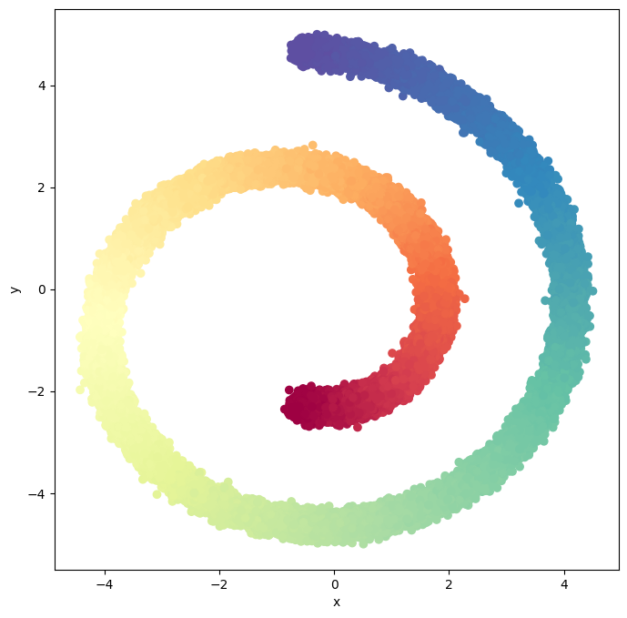

Example: Score-Based Generative Model for 2D Swiss Roll Dataset#
Generate Swiss Roll Dataset#
from sklearn.datasets import make_swiss_roll
import numpy as np
import torch
import torch.nn as nn
# from torch.nn import init
# from torch.nn import functional as F
# import math
import matplotlib.pyplot as plt
import matplotlib.animation as animation
from IPython.display import HTML
from IPython.display import clear_output
import functools
from torch.optim import Adam
from torch.utils.data import DataLoader
from tqdm.notebook import trange
# Set the device
device = 'mps' # 'cuda' or 'cpu'
def generate_swiss_roll_dataset(n_samples=1000, noise=0.0, random_state=None):
"""
Function to generate Swiss Roll dataset.
Parameters:
n_samples (int): The total number of points equally divided among classes.
noise (float): Standard deviation of Gaussian noise added to the data.
random_state (int): Determines random number generation for dataset creation.
Returns:
X (torch.Tensor): The generated samples.
t (torch.Tensor): The univariate position of the sample according to the main dimension of the points in the Swiss Roll.
"""
X, t = make_swiss_roll(n_samples, noise=noise, random_state=random_state)
X = X[:, [0, 2]]
# Scale and normalize to [-1,1]
X = (X - np.min(X)) / (np.max(X) - np.min(X))
X = 10 * X - 5
# Convert to PyTorch tensors
X = torch.from_numpy(X).float()
t = torch.from_numpy(t).float()
return X, t
# Generate Swiss Roll dataset
X, t = generate_swiss_roll_dataset(n_samples=100000, noise=0.3, random_state=42)
print(f"Swiss Roll dataset: {X.shape}")
print(f"Labels: {t.shape}")
Swiss Roll dataset: torch.Size([100000, 2])
Labels: torch.Size([100000])
# function to Plot 2d Swiss Roll dataset
def plot_2d_swiss_roll(X, t=None, title="Swiss Roll data"):
if t is None:
t = np.zeros(X.shape[0])
fig = plt.figure(figsize=(8, 8))
ax = fig.add_subplot(111)
ax.scatter(X[:, 0], X[:, 1], c=t, cmap=plt.cm.Spectral)
ax.set_xlabel("x")
ax.set_ylabel("y")
plt.show()
plot_2d_swiss_roll(X, t, title="Swiss Roll dataset")

Implmeneting Score-Based Generative Model#
Score Function#
class GaussianFourierProjection(nn.Module):
"""Gaussian random features for encoding time steps."""
# [\sin(2\pi \omega t) ; \cos(2\pi \omega t)]
def __init__(self, embed_dim, scale=30.):
super().__init__()
# Randomly sample weights during initialization. These weights are fixed
# during optimization and are not trainable.
self.W = nn.Parameter(torch.randn(embed_dim // 2) * scale, requires_grad=False)
def forward(self, x):
x_proj = x[:, None] * self.W[None, :] * 2 * np.pi
return torch.cat([torch.sin(x_proj), torch.cos(x_proj)], dim=-1)
Define the Score Model#
class ScoreNet(nn.Module):
def __init__(self, marginal_prob_std, input_dim=2, hidden_dim=512, output_dim=2, embed_dim=256):
super().__init__()
# Gaussian random feature embedding layer for time
self.embed = nn.Sequential(GaussianFourierProjection(embed_dim=embed_dim),
nn.Linear(embed_dim, embed_dim),
nn.GELU()
)
self.linear_model1 = nn.Sequential(
nn.Linear(input_dim, embed_dim),
nn.Dropout(0.2),
nn.GELU()
)
self.linear_model2 = nn.Sequential(
nn.Linear(embed_dim, hidden_dim),
nn.Dropout(0.2),
nn.GELU(),
nn.Linear(hidden_dim, hidden_dim),
nn.Dropout(0.2),
nn.GELU(),
nn.Linear(hidden_dim, input_dim),
)
self.marginal_prob_std = marginal_prob_std
def forward(self, x, t):
h = self.linear_model2(self.linear_model1(x) + self.embed(t))/ self.marginal_prob_std(t)[:, None]
return h
def marginal_prob_std(t, sigma):
t = torch.tensor(t, device=device)
return torch.sqrt((sigma**(2 * t) - 1.) / 2. / np.log(sigma))
def diffusion_coeff(t, sigma):
return torch.tensor(sigma**t, device=device)
sigma = 25.0
marginal_prob_std_fn = functools.partial(marginal_prob_std, sigma=sigma)
diffusion_coeff_fn = functools.partial(diffusion_coeff, sigma=sigma)
Define the loss function#
def loss_fn(model, x, marginal_prob_std, eps=1e-5):
random_t = torch.rand(x.shape[0], device=x.device) * (1. - eps) + eps
z = torch.randn_like(x)
std = marginal_prob_std(random_t)
perturbed_x = x + z * std[:, None]
score = model(perturbed_x, random_t)
loss = torch.mean(torch.sum((score * std[:, None] + z)**2, dim=1))
return loss
Initialize the network#
# network parameter
input_dim = 2 # x, y coordinates
hidden_dim = 512 # hidden dimension
output_dim = 2 # Score for each coordinate
embed_dim = 256 # Dimension of the Gaussian random feature embedding
# marginal_prob_std, input_dim=2, hidden_dim=32, output_dim=2, embed_dim=16
score_model = ScoreNet(marginal_prob_std_fn, input_dim, hidden_dim, output_dim, embed_dim)
score_model = score_model.to(device)
set the Training parameter and load the data#
# set to True if you have a pre-trained model
load_model = False
if load_model:
ckpt = torch.load('score_ckpt.pth', map_location=device)
score_model.load_state_dict(ckpt)
# Training parameters
batch_size = 8192 # size of a mini-batch 8192
n_epochs = 50 # number of training epochs 40
lr = 1e-3 # learning rate 1e-3
# Loss function parameters
eps = 1e-3 # epsilon for numerical stability 1e-5
# Prepare the data loader
X_tensor = torch.tensor(X, dtype=torch.float32, device=device)
t_tensor = torch.tensor(t, dtype=torch.float32, device=device)
data_loader = DataLoader(
list(zip(X_tensor, t_tensor)),
batch_size=batch_size,
shuffle=True,
num_workers=0
)
/var/folders/59/r58bsq3j6j9f_t7d4z2fbww40000gn/T/ipykernel_17657/3113855860.py:15: UserWarning: To copy construct from a tensor, it is recommended to use sourceTensor.clone().detach() or sourceTensor.clone().detach().requires_grad_(True), rather than torch.tensor(sourceTensor).
X_tensor = torch.tensor(X, dtype=torch.float32, device=device)
/var/folders/59/r58bsq3j6j9f_t7d4z2fbww40000gn/T/ipykernel_17657/3113855860.py:16: UserWarning: To copy construct from a tensor, it is recommended to use sourceTensor.clone().detach() or sourceTensor.clone().detach().requires_grad_(True), rather than torch.tensor(sourceTensor).
t_tensor = torch.tensor(t, dtype=torch.float32, device=device)
Training the score model#
optimizer = Adam(score_model.parameters(), lr=lr)
tqdm_epoch = trange(n_epochs)
for epoch in tqdm_epoch:
avg_loss = 0.
num_items = 0
for x, y in data_loader:
# x = torch.tensor(x, dtype=torch.float32).to(device)
loss = loss_fn(score_model, x, marginal_prob_std_fn, eps=eps)
optimizer.zero_grad()
loss.backward()
optimizer.step()
avg_loss += loss.item() * x.shape[0]
num_items += x.shape[0]
# Print the averaged training loss so far.
tqdm_epoch.set_description('Average Loss: {:5f}'.format(avg_loss / num_items))
# Update the checkpoint after each epoch of training.
torch.save(score_model.state_dict(), 'score_ckpt.pth')
/var/folders/59/r58bsq3j6j9f_t7d4z2fbww40000gn/T/ipykernel_17657/4252239664.py:2: UserWarning: To copy construct from a tensor, it is recommended to use sourceTensor.clone().detach() or sourceTensor.clone().detach().requires_grad_(True), rather than torch.tensor(sourceTensor).
t = torch.tensor(t, device=device)
/Users/damian/miniconda3/envs/pt38/lib/python3.8/site-packages/torch/optim/optimizer.py:243: UserWarning: 'has_cuda' is deprecated, please use 'torch.backends.cuda.is_built()'
if not is_compiling() and torch.has_cuda and torch.cuda.is_available():
---------------------------------------------------------------------------
KeyboardInterrupt Traceback (most recent call last)
Cell In[10], line 8
5 num_items = 0
6 for x, y in data_loader:
7 # x = torch.tensor(x, dtype=torch.float32).to(device)
----> 8 loss = loss_fn(score_model, x, marginal_prob_std_fn, eps=eps)
9 optimizer.zero_grad()
10 loss.backward()
Cell In[7], line 4, in loss_fn(model, x, marginal_prob_std, eps)
2 random_t = torch.rand(x.shape[0], device=x.device) * (1. - eps) + eps
3 z = torch.randn_like(x)
----> 4 std = marginal_prob_std(random_t)
5 perturbed_x = x + z * std[:, None]
6 score = model(perturbed_x, random_t)
Cell In[6], line 3, in marginal_prob_std(t, sigma)
1 def marginal_prob_std(t, sigma):
2 t = torch.tensor(t, device=device)
----> 3 return torch.sqrt((sigma**(2 * t) - 1.) / 2. / np.log(sigma))
KeyboardInterrupt:
Defining the sampling function - predictor corrector sampling based on score SDE#
def pc_sampler(score_model,
marginal_prob_std,
diffusion_coeff,
batch_size=64,
num_steps=400,
snr=0.16,
device='mps',
eps=1e-5):
t = torch.ones(batch_size, device=device)
init_x = torch.randn(batch_size, input_dim, device=device) * marginal_prob_std(t)[:, None]
time_steps = np.linspace(1., eps, num_steps)
step_size = time_steps[0] - time_steps[1]
x = init_x
samples = []
with torch.no_grad():
for time_step in time_steps:
batch_time_step = torch.ones(batch_size, device=device) * time_step
# Corrector step (Langevin MCMC)
grad = score_model(x, batch_time_step)
grad_norm = torch.norm(grad, dim=-1).mean()
noise_norm = np.sqrt(np.prod(x.shape[1:]))
langevin_step_size = 2 * (snr * noise_norm / grad_norm)**2
x = x + langevin_step_size * grad + torch.sqrt(2 * langevin_step_size) * torch.randn_like(x)
# Predictor step (Euler-Maruyama)
g = diffusion_coeff(batch_time_step)
x_mean = x + (g**2)[:, None] * score_model(x, batch_time_step) * step_size
x = x_mean + torch.sqrt(g**2 * step_size)[:, None] * torch.randn_like(x)
samples.append(x_mean.cpu().clone().numpy())
samples = np.stack(samples, axis=1)
time_series_samples = np.swapaxes(samples, 0, 1)
# The last step does not include any noise
return x_mean, time_series_samples
Alternative - SDE based Euler Maruyama sampling (simpler but less accurate)#
## The number of sampling steps.
num_steps = 500
def Euler_Maruyama_sampler(score_model,
marginal_prob_std,
diffusion_coeff,
batch_size=64,
num_steps=num_steps,
device='mps',
eps=1e-5):
t = torch.ones(batch_size, device=device)
init_x = torch.randn(batch_size, input_dim, device=device) * marginal_prob_std(t)[:, None]
time_steps = torch.linspace(1., eps, num_steps, device=device)
step_size = time_steps[0] - time_steps[1]
x = init_x
with torch.no_grad():
for time_step in time_steps:
batch_time_step = torch.ones(batch_size, device=device) * time_step
g = diffusion_coeff(batch_time_step)
x_mean = x + (g**2)[:, None] * score_model(x, batch_time_step) * step_size
x = x_mean + torch.sqrt(g**2 * step_size)[:, None] * torch.randn_like(x)
# Do not include any noise in the last sampling step.
return x_mean
Testing the score model using predictor corrector sampling#
num_steps = 100
signal_to_noise_ratio = 0.015
eps = 1e-3
num_samples = 2000
# Test the prdictor corrector sample function
last_sample, sample_time_series = pc_sampler(score_model, marginal_prob_std_fn, diffusion_coeff_fn, num_steps=num_steps, batch_size=num_samples, device=device, snr=signal_to_noise_ratio, eps=eps)
scatter_range = [-7, 7]
# only take the last xx% of the samples for visualization
# num_step = sample_time_series.shape[0]
# sample_time_series = sample_time_series[int(num_step*0.1):, :, :]
sample = torch.tensor(sample_time_series, dtype=torch.float32, device=device)
def update_plot(i, data, scat):
scat.set_offsets(data[i].detach().cpu().numpy())
return scat
numframes = len(sample)
scatter_point = sample[0].detach().cpu().numpy()
scatter_x, scatter_y = scatter_point[:,0], scatter_point[:,1]
fig = plt.figure(figsize=(6, 6))
plt.xlim(scatter_range)
plt.ylim(scatter_range)
scat = plt.scatter(scatter_x, scatter_y, s=1)
plt.show()
clear_output()
ani = animation.FuncAnimation(fig, update_plot, frames=range(numframes), fargs=(sample, scat), interval=150)
writergif = animation.PillowWriter(fps=50)
ani.save('score_swiss.gif', writer=writergif)
HTML(ani.to_jshtml())
ODE based sampling - We can use powerful ODE solvers to sample from our score based model#
from scipy import integrate
## The error tolerance for the black-box ODE solver
error_tolerance = 1e-5
def ode_sampler(score_model,
marginal_prob_std,
diffusion_coeff,
batch_size=64,
atol=error_tolerance,
rtol=error_tolerance,
device='cuda',
z=None,
eps=1e-3):
"""Generate samples from score-based models with black-box ODE solvers.
Args:
score_model: A PyTorch model that represents the time-dependent score-based model.
marginal_prob_std: A function that returns the standard deviation
of the perturbation kernel.
diffusion_coeff: A function that returns the diffusion coefficient of the SDE.
batch_size: The number of samplers to generate by calling this function once.
atol: Tolerance of absolute errors.
rtol: Tolerance of relative errors.
device: 'cuda' for running on GPUs, and 'cpu' for running on CPUs.
z: The latent code that governs the final sample. If None, we start from p_1;
otherwise, we start from the given z.
eps: The smallest time step for numerical stability.
"""
t = torch.ones(batch_size, device=device)
# Create the latent code
if z is None:
init_x = torch.randn(batch_size, input_dim, device=device) * marginal_prob_std(t)[:, None]
else:
init_x = z
shape = init_x.shape
def score_eval_wrapper(sample, time_steps):
"""A wrapper of the score-based model for use by the ODE solver."""
sample = torch.tensor(sample, device=device, dtype=torch.float32).reshape(shape)
time_steps = torch.tensor(time_steps, device=device, dtype=torch.float32).reshape((sample.shape[0], ))
with torch.no_grad():
score = score_model(sample, time_steps)
return score.cpu().numpy().reshape((-1,)).astype(np.float64)
def ode_func(t, x):
"""The ODE function for use by the ODE solver."""
time_steps = np.ones((shape[0],)) * t
g = diffusion_coeff(torch.tensor(t, dtype=torch.float32)).cpu().numpy()
return -0.5 * (g**2) * score_eval_wrapper(x, time_steps)
# Run the black-box ODE solver.
res = integrate.solve_ivp(ode_func, (1., eps), init_x.reshape(-1).cpu().numpy(), rtol=rtol, atol=atol, method='RK45')
print(f"Number of function evaluations: {res.nfev}")
x = torch.tensor(res.y[:, -1], dtype=torch.float32, device=device).reshape(shape)
return x
eps = 1e-5 #@param {'type':'number'}
num_samples = 2000 #@param {'type':'integer'}
# ode_sampler(score_model,
# marginal_prob_std,
# diffusion_coeff,
# batch_size=64,
# atol=error_tolerance,
# rtol=error_tolerance,
# device='cuda',
# z=None,
# eps=1e-3)
# Test the prdictor corrector sample function
# sampler = pc_sampler # Euler_Maruyama_sampler, pc_sampler
samples = ode_sampler(score_model, marginal_prob_std_fn, diffusion_coeff_fn, batch_size=num_samples, device=device, eps=eps)
# Convert tensor to numpy array and plot generated samples
samples_np = samples.cpu().detach().numpy()
plot_2d_swiss_roll(samples_np, t=None, title="Generated data samples")